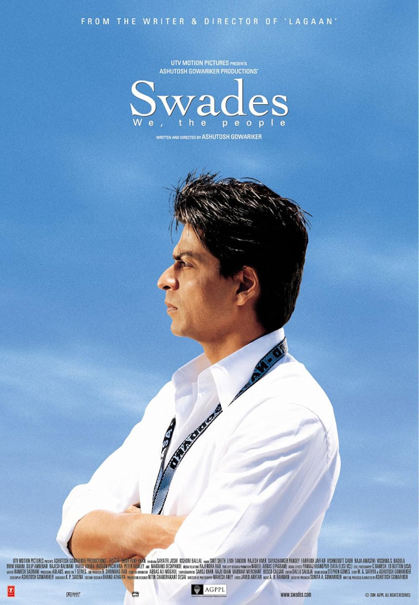
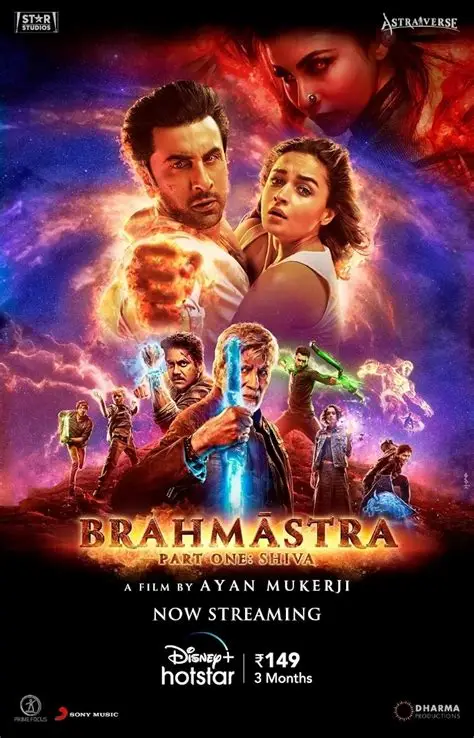
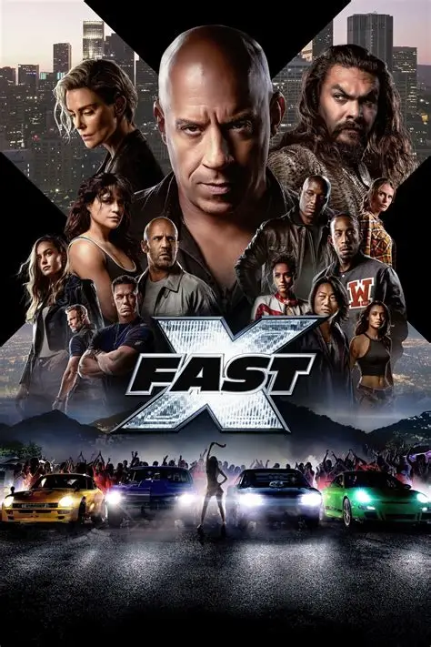
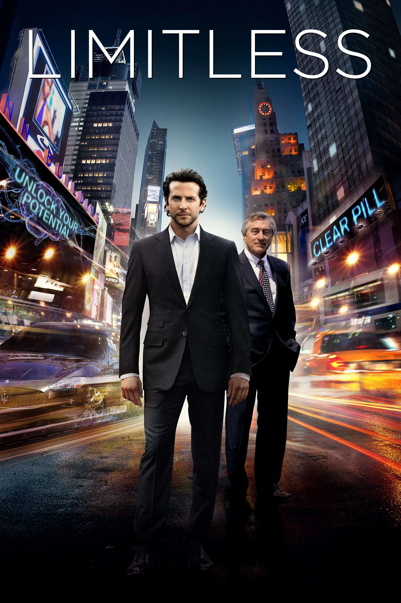
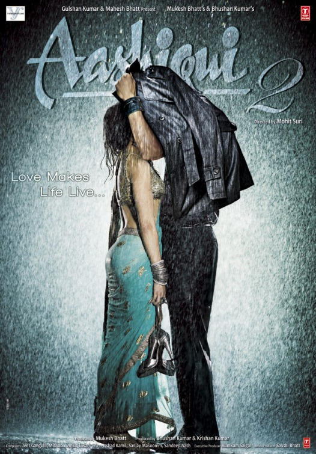
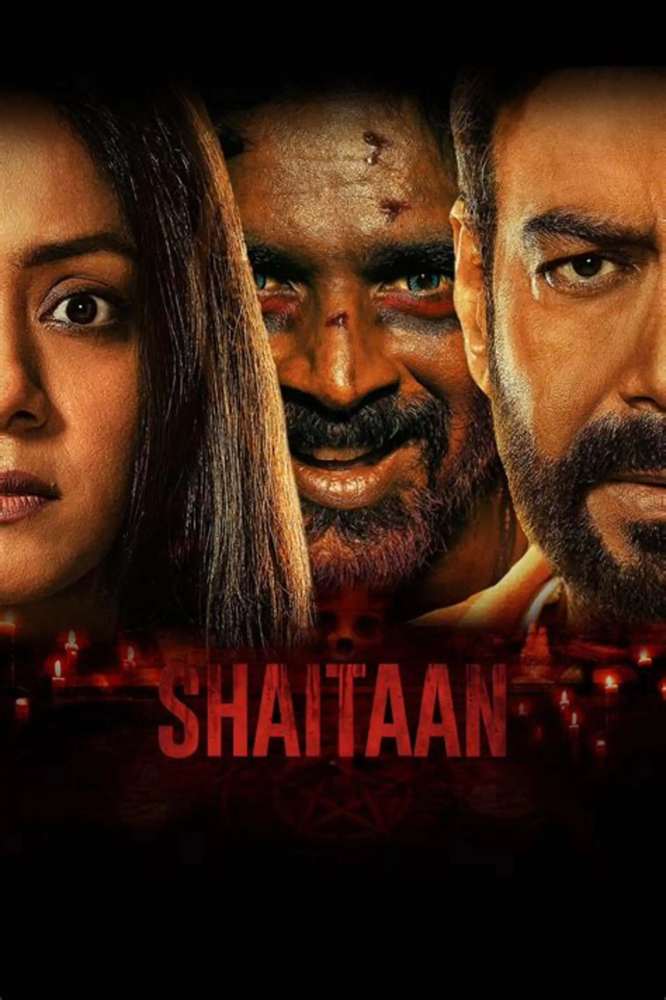
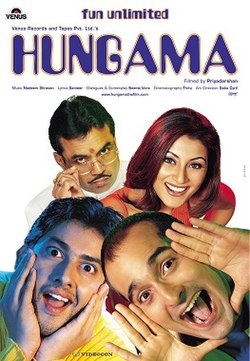
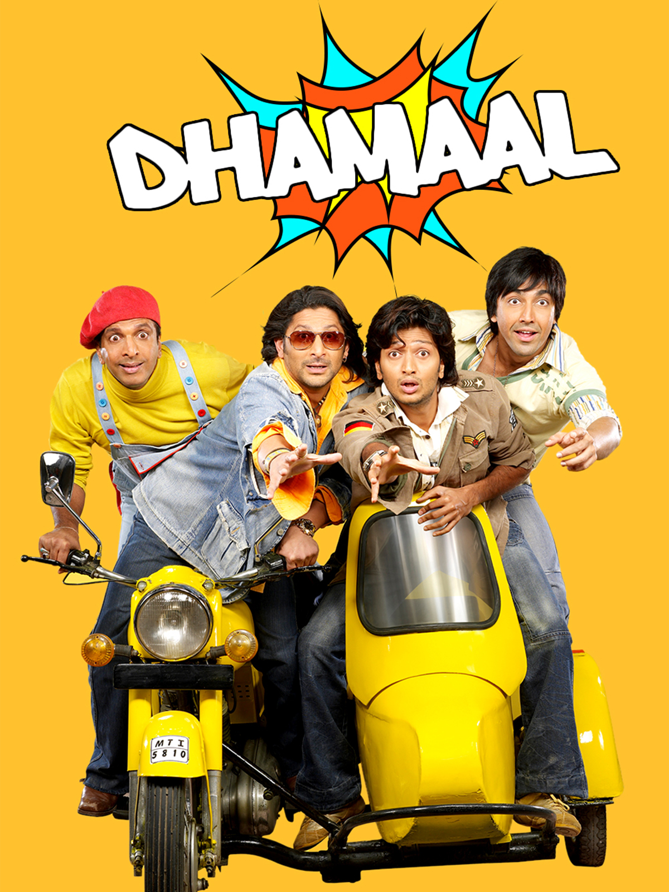

Pushpa 2:The Rule
Rating:★ 6.0
Genre:Action
Director:Bandreddi Sukumar
Duration:200 minutes|Language:Hindi
Writers : A.R. Prabhav . Rajendra Sapre . Sukumar
Stars : Allu Arjun . Rashmika Mandanna . Fahadh Faasil
Rating:★ 6.0
Genre:Action
Director:Bandreddi Sukumar
Duration:200 minutes|Language:Hindi
Writers : A.R. Prabhav . Rajendra Sapre . Sukumar
Stars : Allu Arjun . Rashmika Mandanna . Fahadh Faasil
Pushpa is become the head of red sandal smuggling syndicate and rules the whole state .While Bhawar Singh Shekhawat is waiting for revenge on Pushpa for insulting him. Pushpa happily married to Srivalli and can do anything for her,she asks for a picture with state Chief Minister during his meet but the CM rejects it considering it might harm his reputation for clicking with smuggler.Pushpa convinces his friend Sidappa to contestant the upcoming elections of next CM and he is ready spend heavy amount for the same.Pushpa teams with an international smuggler Hameed for a huge consignment of Red Sandal and alerts all his dealers.Shekawat takes this opportunity to get Pushpa on his knees by teaming up with Sinu and Daksha.But Shekhawat goes violent way by killing one of the dealers which spreads fear among others that Shekhawat and Pushpa's rivalry might end the syndicate.The members convince them for patch up but Shekhawat agrees on a condition that Pushpa says him sorry in front of everyone.A huge party is organized where Pushpa and Shekhawat face off each other and Pushpa says sorry to Shekhawat and leaves the party.But somewhere feels that he has brought down his own image and returns back to the party where Shekhawat is celebrating.But Shekhawat's happiness is lived shortly as this time Pushpa insults him in front of huge crowd and both are angry for each others blood who are controlled by the crowd.Pushpa then openly challenges Shekhawat that he will leave the syndicate if he catches his next Red Sandal consignment.

Rating:★ 8.7
Genre :Science Fiction
Director:Christopher Nolan
Duration:169 minutes|Language:English
Writers : Jonathan Nolan . Christopher Nolan
Stars : Matthew McConaughey . Anne Hathaway . Jessica Chastain
In the near future around the American Midwest, Cooper, an ex-science engineer and pilot, is tied to his farming land with his daughter Murph and son Tom. As devastating sandstorms ravage Earth's crops, the people of Earth realize their life here is coming to an end as food begins to run out. Eventually stumbling upon a N.A.S.A. base 6 hours from Cooper's home, he is asked to go on a daring mission with a few other scientists into a wormhole because of Cooper's scientific intellect and ability to pilot aircraft unlike the other crew members. In order to find a new home while Earth decays, Cooper must decide to either stay, or risk never seeing his children again in order to save the human race by finding another habitable planet

Rating:★ 7.3
Genre:Comeday
Director:Vipul Mehta
Duration:129 minutes|Language:Gujarati
Writers : Vipul Mehta
Stars : Shah Devarshi . Siddharth Randeria . Yukti Randeria
Bachu Bapodara, a miser and health freak, is on a free trip to Bangkok. A mystery woman, wild adventures, and heartfelt twists make his journey hilarious and emotional. 'Bachu Ni Benpani' is a perfect film for the whole family.

Rating:★ 6.1
Genre:Action
Director:Siddharth Anand
Duration:166 minutes|Language:Hindi
Writers : Siddharth Anand . Ramon Chibb
Stars : Hrithik Roshan . Deepika Padukone . Anil Kapoor
A reckless yet brilliant squadron leader and his team of elite fighter pilots face mortal dangers and inner demons as they unite for a deadly mission
Rating:★ 8.1
Genre:Action
Director:Destin Daniel Cretton
Duration:145 minutes|Language:English
Writers : Chris McKenna . Erik Sommers . Stan Lee
Stars : Tom Holland . Zendaya . Mark Ruffalo
Four years have passed since the events of No Way Home, and Peter is now an adult living entirely alone, having voluntarily erased himself from the lives and memories of those he loves. Crime-fighting in a New York that no longer knows his name, he's devoted himself entirely to protecting his city - a full-time Spider-Man - but as the demands on him intensify, the pressure sparks a surprising physical evolution that threatens his existence, even as a strange new pattern of crimes gives rise to one of the most powerful threats he has ever faced.

Rating:★ 8.2
Genre:Drama
Director:Ashutosh Gowariker
Duration:189 minutes|Language:Hindi
Writers : M.G. Sathya . Ashutosh Gowariker . Sameer Sharma
Stars : Shah Rukh Khan . Gayatri Joshi
Set in modern day India, Swades is a film that tackles the issues that development throws up on a grass root level. It is to this India, which is colorful, heterogeneous and complex that Mohan Bhargava (Shah Rukh Khan), a bright young scientist working as a project manager in NASA, returns to on a quest to find his childhood nanny. The film uses the contrast between the highly developed world of NASA, which has been at the forefront of advances in space research, and this world back home in India, which is at the crossroads of development. Mohan's simple quest becomes the journey that every one of us goes through in search of that metaphysical and elusive place called "home".

Rating:★ 5.6
Genre:Action/Adventure
Director:Ayan Mukerji
Duration:207 minutes|Language:Hindi
Writers : Hussain Dalal . Ayan Mukerji
Stars : Amitabh Bachchan . Ranbir Kapoor . Alia Bhatt
In ancient India people of Brahmansh community would take care of their spiritual weapon Brahmastra but as years passed by with changing times people started to forget about it. In present day Shiva a DJ has strange connection with fire which never harms him he meets Isha and both fall in love. A Delhi based scientist Mohan Bhargav from Brahmansh community possess a piece of Brahmastra and gets attacked by two evil forces Zor and Raftaar but he manages to overcome them with powers of Vanarastra but the evil queen Junoon manages to control him and tortures to ask about Brahmastra. But Bhargav being protector of it gives his life which is seen by Shiva in hallucinations after he comes in contact with fire he also notices that next target could be an artist Anish Shetty. Shiva and Isha go to save Anish at Varanasi where he tells him the events he saw but Junoon has already reached there to kill him but Anish manages to escape with Shiva and Isha with power of Nandiastra and asks them to take him to Guruji's Ashram in Himachal. On the way Anish finds who actually is Shiva and gives his piece of Brahmastra to Isha and asks her to reach it safely to Guruji as Junoon is following them who is unaware of Guruji's Ashram. Anish loses his life while fighting with Junoon and her men while after lot of hurdles Shiva and Isha reach Guruji's Ashram where Guruji reveals who actually Shiva is and his connection with fire. And that Brahmastra has three pieces of which one is missing and if Junoon joins them all together the universe will be destroyed
Rating:★ 8.0
Genre:Romance/Drama
Director:James Cameron
Duration:194 minutes|Language:English
Writers : James Cameron
Stars : Leonardo DiCaprio . Kate Winslet . Billy Zane
84 years later, a 100 year-old woman named Rose DeWitt Bukater tells the story to her granddaughter Lizzy Calvert, Brock Lovett, Lewis Bodine, Bobby Buell and Anatoly Mikailavich on the Keldysh about her life set in April 10th 1912, on a ship called Titanic when young Rose boards the departing ship with the upper-class passengers and her mother, Ruth DeWitt Bukater, and her fiancé, Caledon Hockley. Meanwhile, a drifter and artist named Jack Dawson and his best friend Fabrizio De Rossi win third-class tickets to the ship in a game. And she explains the whole story from departure until the death of Titanic on its first and last voyage April 15th, 1912 at 2:20 in the morning.

Rating:★ 6.0
Genre:Romance
Director:Luv Ranjan
Duration:150 minutes|Language:Hindi
Writers : Luv Ranjan . Rahul Mody
Stars : Ranbir Kapoor . Shraddha Kapoor . Anubhav Singh Bassi
Mickey belongs to a well-known business family, as a side business he along with his friend Dabbas help couples to separate who are not happy in their relationships.During bachelor-rate of Dabbas he meets Tinni and both fall in love after lot of hide and seek in relationship.Mickey and Tinni's parents agree for their marriage but Tinni finds that Mickey's family is quite possessive about him.Tinni feels that she won't be able to adjust in his family as she wants her own space.Tinni contacts for advise in breaking her relationship not knowing that she is speaking to none other then Mickey

Rating:★ 5.7
Genre:Action
Director:Louis Leterrier
Duration:141 minutes|Language:English
Writers : Dan Mazeau . Justin Lin . Zach Dean
Stars : Vin Diesel . Michelle Rodriguez . Jason Statham
The final road begins! Dom Torretto and his family have made it through thick and thin together while succeeding in various missions and fighting off multiple villains. But now Dom is put to the ultimate test when he goes up against Dante Reyes, the son of an old foe who is out to exact revenge for the death of his father. With time running out and help from new allies, Dom and his family are in for the fight of their lives against the biggest enemy they have ever faced.

Rating:★ 7.4
Genre:Sci-Fi
Director:Neil Burger
Duration:105 minutes|Language:English
Writers : Leslie Dixon . Alan Glynn
Stars : Bradley Cooper . Anna Friel . Abbie Cornish
An action-thriller about a writer who takes an experimental drug that allows him to use 100% of his mind. As one man evolves into the perfect version of himself, forces more corrupt than he can imagine mark him for assassination. Out-of-work writer Eddie Morra's (Cooper) rejection by girlfriend Lindy (Abbie Cornish) confirms his belief that he has zero future. That all vanishes the day an old friend introduces Eddie to NZT, a designer pharmaceutical that makes him laser-focused and more confident than any man alive. Now on an NZT-fueled odyssey, everything Eddie's read, heard or seen is instantly organized and available to him. As the former nobody rises to the top of the financial world, he draws the attention of business mogul Carl Van Loon (De Niro), who sees this enhanced version of Eddie as the tool to make billions, but brutal side effects jeopardize his meteoric ascent. With a dwindling stash and hit men who will eliminate him to get the NZT, Eddie must stay wired long enough to elude capture and fulfill his destiny. If he can't, he will become just another victim who thought he'd found invincibility in a bottle

Rating:★ 7.1
Genre:Romance
Director:Mohit Suri
Duration:132 minutes|Language:Hindi
Writers : Shagufta Rafique
Stars : Aditya Roy Kapoor . Shraddha Kapoor . Shaad Randhawa
Rahul is a singer, who loses his career due to his drinking habits. He meets Arohi in a bar in Goa, where she works to earn a living. Impressed by her singing, he promises her to take her to Mumbai and make her a star, where they fall in love with each other. Aashiqui 2 is a musical love story of these lovers who goes through love and hate, fame and failure in their lives. However will they stay together accepting their success, or will they breakup due to their ego?

Rating:★ 6.6
Genre:Sci-Fi
Director:Jagan Shakti
Duration:130 minutes|Language:Hindi
Writers : R Balki . Saketh Kondiparthi . Jagan Shakti
Stars : Akshay Kumar . Vidya Balan . Taapsee Pannu
Based on true events of the Indian Space Research Organisation (ISRO) successfully launching the Mars Orbiter Mission (Mangalyaan), making it the least expensive mission to Mars.

Rating:★ 6.5
Genre:Drama|Horror
Director:Vikas Bahl
Duration:132 minutes|Language:Hindi
Writers : Aamil Keeyan Khan . Krishnadev Yagnik
Stars : Ajay Devgn . Madhavan . Jyotika
Kabir and his family's fun weekend retreat takes a nightmarish turn when they let a friendly but mysterious stranger into their house. As the clock ticks, the family will be forced to confront their worst fears in this gripping, edge-of-the-seat supernatural-thriller that deals with the sinister elements of Indian Black Magic.

Rating:★ 7.1
Genre:Action/Adventure
Director: Christopher McQuarrie
Duration:169 minutes|Language:English
Writers : Christopher McQuarrie . Erik Jendresen . Bruce Geller
Stars : Tom Cruise . Hayley Atwell . Ving Rhames
Ethan Hunt and the IMF team continue their search for the terrifying AI known as the Entity - which has infiltrated intelligence networks all over the globe - with the world's governments and a mysterious ghost from Ethan's past on their trail. Joined by new allies and armed with the means to shut the Entity down for good, Hunt is in a race against time to prevent the world as we know it from changing forever

Rating:★ 8.3
Genre:Drama
Director:Todd Phillips
Duration:122 minutes|Language:English
Writers : Todd Phillips . Scott Silver . Bob Kane
Stars : Joaquin Phoenix . Robert De Niro . Zazie Beetz
A socially inept clown for hire - Arthur Fleck aspires to be a stand up comedian among his small job working dressed as a clown holding a sign for advertising. He takes care of his mother, Penny Fleck, and as he learns more about his mental illness, he learns more about his past. Dealing with all the negativity and bullying from society, he heads downwards on a spiral, in turn showing how his alter ego, "Joker," came to be.
Rating:★ 7.2
Genre:Comeday
Director:Mayur K. Barot . Anees Bazmee
Duration:150 minutes|Language:Hindi
Writers : Anees BazmeeRajeev KaulPraful Parekh
Stars : Akshay Kumar . Katrina Kaif . Nana Patekar
After the passing away of his dark-skinned wife, from who they sired Uday, Dubai-based criminal don, Shankar Shetty re-married a fair-skinned woman, who gave birth to fair-skinned Sanjana. After the couple's passing, Uday takes over in his dad's footsteps, and takes it upon himself to try and get Sanjana married - in vain, as no one wants to be associated with a crime family. Then Uday's associate, Sagar Pandey, aspiring live-action painter, who had loved Iravati, got beat-up by her brothers, and was re-named Majnu, assists in finding a young man, Rajiv, who lives with his maternal uncle, Dr. Ghunghroo and aunt, and through extortion compels Ghunghroo to accept this alliance. But Ghunghroo, at the very first opportunity, gets Rajiv to fall in love with another young woman in Sun City, South Africa. When the time comes to get Rajiv formally engaged to this woman, he finds out that Sanjana and she are the very same woman. With no escape from this predicament, the wedding is planned, invitations are sent out, and even Ranvir Dhanraj alias RDX, an Italian-based criminal don, also makes an appearance. On the day of the engagement, a woman claiming to be Rajiv's child-hood betrothed shows up, makes a successful plea to Ranvir, and gets the engagement annulled. When Dr. Ghunghroo finds out that Rajiv and Sanjana have fallen in love with each other, he decides to accept Sanjana into the family on the condition that Uday gives up on crime. Rajiv and Sanjana attempt to get Uday to take up acting in a Bollywood movie - with considerable success - so much so that Uday has no time for crime. Things get complicated when Ranvir's son, Lucky, gets wind of Rajiv's scheme and arrives in India with one mission - get Uday back on track with crime - and if necessary do away with Rajiv - once and for all.

Rating:★ 7.6
Genre:Comeday
Director:Priyadarshan
Duration:153 minutes|Language:Hindi
Writers : Priyadarshan . Neeraj Vora . Jay Master
Stars : Akshaye Khanna . Aftab Shivdasani . Rimi Sen
The story of a bunch of misfits whose misconception about each others backgrounds end up in a series of chaotic, yet comic outcomes. Aftab and Rimi play two strangers who have to pretend that are a married couple in order to get a place to live. Paresh Rawal plays a rich, yet ground to earth businessman whose business is named after his wife Anjali. Akshaye Khanna plays a young man starting a new business in electronic ware. Things get complicated when Rimi Sen goes to Paresh Rawal's house in search of a job & meets Akshaye Khanna who falls in love with her thinking she is Paresh Rawal's daughter. Paresh Rawal's wife thinks that he is having an affair with Rimi Sen & while Paresh Rawal thinks his wife is having an affair with Akshaye Khanna due to Rimi Sen and her having the same name. Then comes in Shakti Kapoor whose daughter falls in love with a guy pretending to be Paresh Rawal's son and soon everything gets out of control.

Rating:★ 7.6
Genre:Comeday
Director:Indra Kumar
Duration:136 minutes|Language:Hindi
Writers : Paritosh Painter . Balvinder Singh Suri . Bunty Rathore
Stars : Sanjay Dutt . Riteish Deshmukh . Arshad Warsi
Four slackers and con-men namely: Boman Contractor, who lives a wealthy lifestyle with his eccentric dad, Nari, who loves his antique car more than his son, and asks his son to leave when he damages the car; hot-headed Aditya and dim-witted Manav, orphaned brothers; and Deshbandhu Roy, a trickster who wears a magnetized belt; share a room with a lenient landlady, who eventually gives up on them and kicks them out. After a number of con tricks, the group are arrested by the Police, but released in the countryside. At this point they witness a car plummet down a cliff, with it's sole occupant, Bose, an underworld don, who, before dying, tells them that he has hidden 10 Crore Rupees in cash in the St. Sebastian's Garden, Goa, and if they find it, it is their's to keep. The group race toward Goa in Contractor's stolen car, little knowing that their plans will soon be foiled, albeit hilariously, by Police Inspector Kabir Nayak, who is angered at this Department for not appreciating his honesty, and is instead penalizing him by transferring him to Yavatmal; a bus hijacker-cum-bandit named Baabubhai, who holds Deshbandhu hostage, and Nari Contractor, who wants the money to repair his now completely damaged car. All want an equal part of the bounty, and each and everyone of them will do anything, even break-up their friendship, rules, laws, and regulations in order to try and keep the cash for themselves, and eventually end up in a race, using a wide assortment of vehicles, and even an airplane, with the winner(s) keeping the entire amount for themselves.
Rating:★ 8.2
Genre:Comeday
Director:Priyadarshan
Duration:132 minutes|Language:Hindi
Writers : Siddique . Lal . Anand S. Vardhan
Stars : Akshay Kumar . Suniel Shetty . Paresh Rawal
Baburao, a garage owner always in financial trouble has a tenant named Raju, who has not paid his rent for 2 years. He also has another tenant named Shyam, who has come to the city to look for a job in his late father's place but is unable to find employment. The three men quarrel amongst themselves frequently. Then one day, the three men get a phone call from a kidnapper named Kabira and decide to make use of this phone call to overcome their financial problems - pretend to be the real kidnappers, increase the ransom amount, keep the incremental amount for themselves, and then give the original ransom demanded to Kabira. Will they get away with this idea?
_poster.jpg)
Rating:★ 7.9
Genre:Sci:Fi
Director:Jon Favreau
Duration:126 minutes|Language:English
Writers : Mark Fergus . Hawk Ostby . Art Marcum
Stars : Robert Downey Jr. . Gwyneth Paltrow . Terrence Howard
Tony Stark. Genius, billionaire, playboy, philanthropist. Son of legendary inventor and weapons contractor Howard Stark. When Tony Stark is assigned to give a weapons presentation to an Iraqi unit led by Lt. Col. James Rhodes, he's given a ride on enemy lines. That ride ends badly when Stark's Humvee that he's riding in is attacked by enemy combatants. He survives - barely - with a chest full of shrapnel and a car battery attached to his heart. In order to survive he comes up with a way to miniaturize the battery and figures out that the battery can power something else. Thus Iron Man is born. He uses the primitive device to escape from the cave in Iraq. Once back home, he then begins work on perfecting the Iron Man suit. But the man who was put in charge of Stark Industries has plans of his own to take over Tony's technology for other matters.